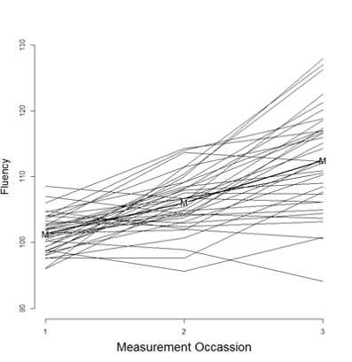

library(here)
library(tidyverse)
library(foreign)Excercise 1: Import and explore data
Introduction
In this first exercise you will have to complete the first cycles of a typical research flow: import a dataset from an external file (an SPSS dataset) and do some first rough data explorations.
Before we set you in action, we will give a very short introduction on the research that generated the dataset.
The Friends Study
The data we will use for this exercise is a simulated dataset, but the data are partially inspired by a study we conducted in Antwerp in cooperation with the Tarragona University (click here to go to the original paper).
The general research question in the dataset was on the impact of subtitling on the language development. More specifically we were interested in whether the use of English subtitling in tv-series impacted the knowledge of the knowledge of colloquial English of Spanish mother tongue speakers. In Spain (as in many other countries) the default is to dub the original spoken word in Spanish. In some other countries (like the Netherlands and the Flemish speaking part of Belgium) the default is the broadcast the original English spoken version of tv series and subtitle them in the official language of the country (e.g., Dutch). The hypothesis leading this research is that learning of English goes faster in the latter case (with the use of subtitles) than in the former case (dubbing).
The dataset contains the data of an experimental study that was designed as follows. 36 students watched ‘Friends’ episodes during 26 weeks, one episode per week. The students were divided in 3 conditions: ‘English subtitled’, ‘Spanish subtitled’ and ‘not subtitled’. They were measured on their fluency in English on three occasions: before the experiment, after 12 weeks and after 26 weeks. The measure used in the study was a count of the number of colloquial words and expressions they used during a free conversation.
In the dataset there are 4 variables:
student (an ID for each student)
occasion (1 = “at the start”; 2 = “after 12 weeks”; 3 = “after 26 weeks”)
condition (1 = “English subtitled”; 2 = “Spanish subtitled”; 3 = “not subtitled’)

Part 1: Create a project
To make working in R and RStudio easier we introduced working with projects in RStudio. Let’s apply this for the exercises. Copy the folder called Exercises to a place on your computer and create a project in RStudio that uses this folder as the home directory.
Part 2: Import the data
2.1
Before you can even start, you have to think about the necessary R packages for your tasks ahead. The data that we will use are stored in SPSS format.
Use the R code chunk below to create code that activates the necessary packages to load the dataset.
2.2
Once packages are loaded you are ready to import the dataset that is stored in the folder Data . The dataset is an SPSS file named Friends.sav.
Use the R code chunk below to import the SPSS data and store it in an object with the name Friends.
Friends <- read.spss(
file = here("Data", "Friends.sav"),
use.value.labels = F,
to.data.frame = T
)2.3
Check whether you succeeded in importing the dataset. A fast way to check this is to run a summary() command for the datafile.
Use the R code chunk below to run a summary( ) for the object called Friends.
summary(Friends) student occassion condition fluency
Min. : 1.00 Min. :1 Min. :1 Min. : 94.08
1st Qu.: 9.75 1st Qu.:1 1st Qu.:1 1st Qu.:101.89
Median :18.50 Median :2 Median :2 Median :104.89
Mean :18.50 Mean :2 Mean :2 Mean :106.63
3rd Qu.:27.25 3rd Qu.:3 3rd Qu.:3 3rd Qu.:110.46
Max. :36.00 Max. :3 Max. :3 Max. :127.96 Part 3: changing the Quarto document
Now that we have a basic Quarto document that can be used to further explore the dataset we can also test our skills and the possibilities of formatting the resulting html-file.
3.1
A first change that we want to make to the document is to have it include a table of contents so that we have an overview of all the titles in the document.
Change the YAML of the document to insert a table of content, test whether it worked by rendering the document.
Solution
Have a look at the YAML of this qmd file. See how we ask to print a table of content by writing toc: true . Also, we ask to print the toc at the left (toc-location: left).
3.2
Now, let’s change try something else. Insert a Tabset that consists out of two tabs. A tab called “Code” and a tab called “Result”. Put the code of exercise 2.3 in the tab called “Code” (but make sure it is not executed in that tab. In the tab “Result” you only want to print the output (the result) of running the code for exercise 2.3.
This is how it looks like in the qmd-file:
summary(Friends) student occassion condition fluency
Min. : 1.00 Min. :1 Min. :1 Min. : 94.08
1st Qu.: 9.75 1st Qu.:1 1st Qu.:1 1st Qu.:101.89
Median :18.50 Median :2 Median :2 Median :104.89
Mean :18.50 Mean :2 Mean :2 Mean :106.63
3rd Qu.:27.25 3rd Qu.:3 3rd Qu.:3 3rd Qu.:110.46
Max. :36.00 Max. :3 Max. :3 Max. :127.96 Notice how we write #| eval: false so that the code is not run but only the printed in the first part (Tabset named Code). In the Tabset called Result we write #| echo: false so that only the result is printed and the code itself is not echoed.